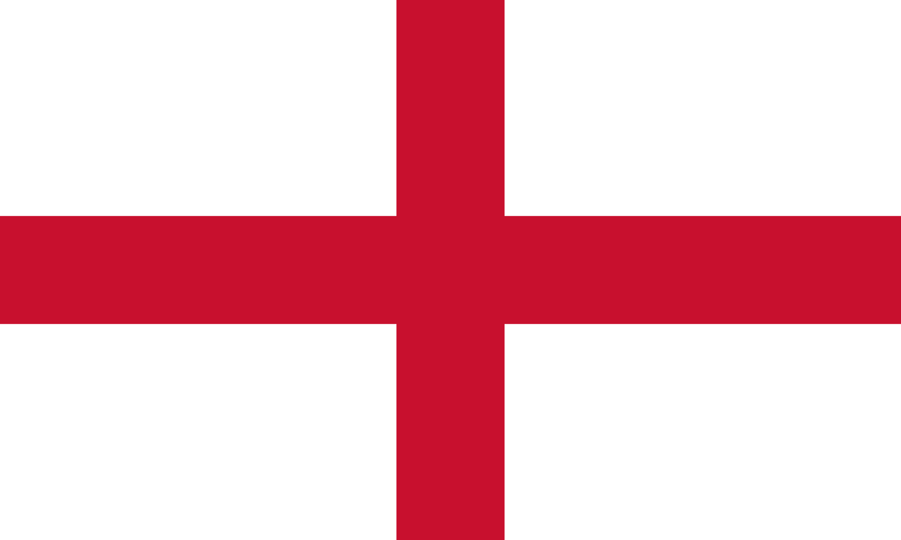
イングランド (England)
Bimber Distillery
The Lakes Distillery
St George’s Distillery
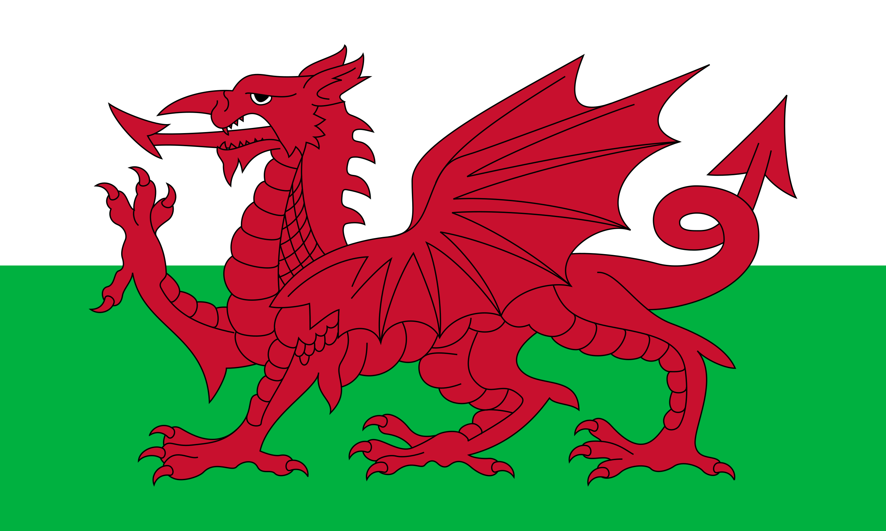
ウェールズ (Wales)
Penderyn Distillery
Llandudno Distillery
Aber Falls Distillery
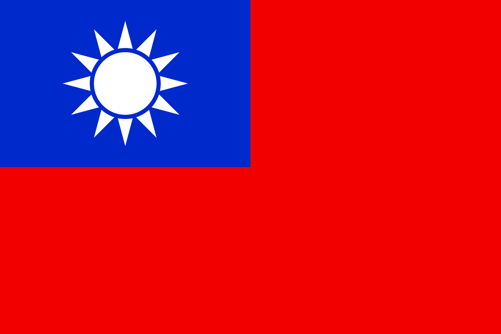
台湾 (Taiwan)
Kavalan Distillery
Nantou Distillery
TTL Distillery
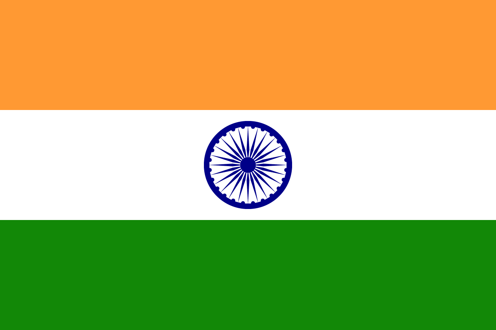
インド (India)
Amrut Distillery
Rampur Distillery
Paul John Distillery
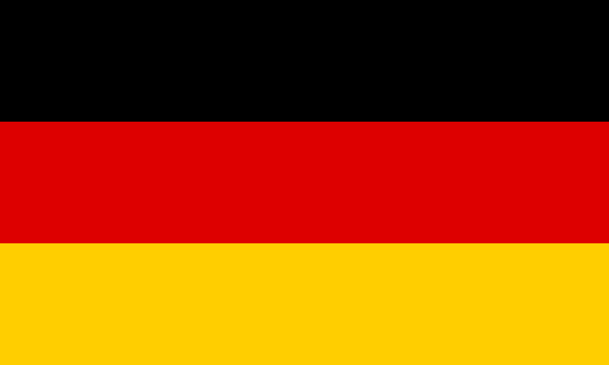
ドイツ (Germany)
Slyrs Distillery
Elsburn (Hercynian Distilling Co.)
Finch Whisky Distillery
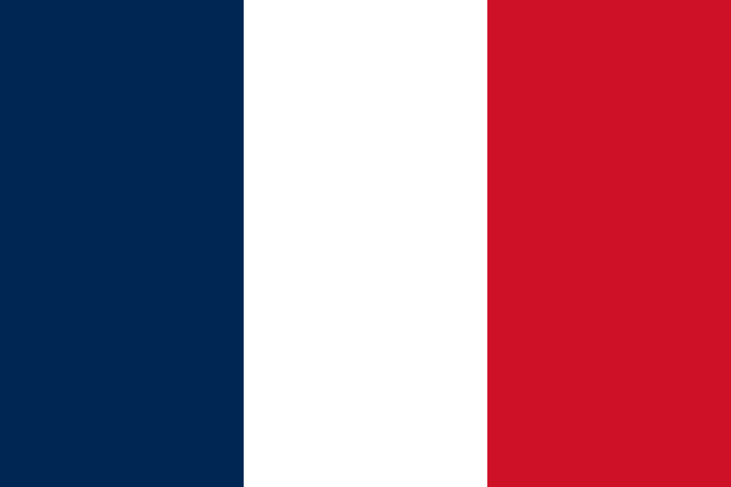
フランス (France)
Armorik Distillery
Brenne Whisky
Warenghem Distillery

デンマーク (Denmark)
Stauning Whisky
Fary Lochan Distillery
Thy Whisky
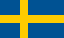
スウェーデン (Sweden)
High Coast Distillery
Mackmyra Distillery
Smögen Whisky
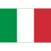
イタリア (Italy)
Puni Distillery
Delva Distillery
Pilzer Distillery
スイス (Switzerland)
Langatun Distillery
Santis Malt Distillery
Swiss Highland Whisky
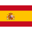
スペイン (Spain)
Destilerias Liber S.L.
Destilerias del Penedes S.A.
Destilerias Y Crianza del Whisky S.A.
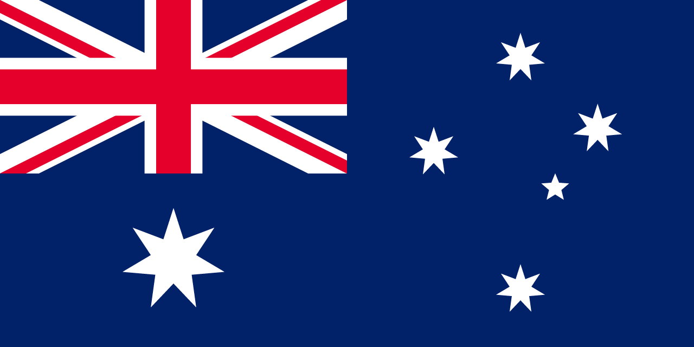
オーストラリア (Australia)
Lark Distillery
Sullivans Cove Distillery
Starward Distillery
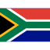
南アフリカ (South Africa)
James Sedgwick’s Distillery
Helden Distillery
Drayman’s Distillery
ニュージーランド (New Zealand)
Thomson Distillery
Cardrona Distillery
Southern Distilleries Ltd
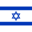
イスラエル (Israel)
Milk & Honey Distillery
Golani Distillery
Pelter Distillery
スロバキア (Slovakia)
Nestville Distillery
St. Nicolaus Distillery
Tatra Distillery
中国 (China)
The Chuan Malt Whisky Distillery
Daqin Distillery
Yun-Tuo Distillery
韓国 (Korea)
Three Societies Distillery
Kimchangsoo Distillery)
Hwayo Distillery
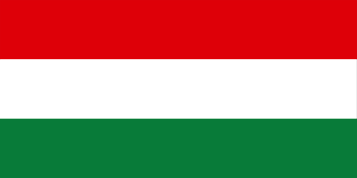
ハンガリー (Hungary)
Agárdi Pálinkafőzde
Szicsek Pálinkafőzde
Seven Hills Distillery
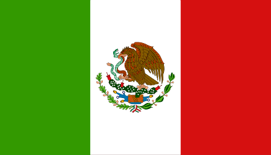
メキシコ (Mexico)
Abasolo Distillery
Sierra Norte
Hacienda Corralejo